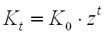
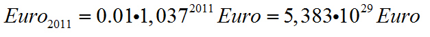
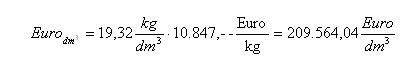
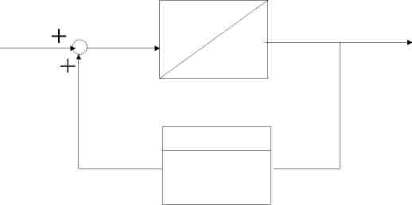

In den Medien wird oft von der Kernschmelze des Finanzsystems geredet. Der Mechanismus bei der Kernschmelze ist, das ein Atom gespalten wird und drei Neutronen freigesetzt werden. Diese treffen auf andere Atome und führen so zu einer Kettenreaktion. Das geht schnell und richtet großen Schaden an. Die Zinsfunktion ist auch eine Exponetialfunktion. Es geht aber deutlich langsamer von statten. Wenn Josef zu Jesus Geburt einen Cent zurückgelegt hätte und er bei 3,7 % verzinst hätte wäre das Guthaben so groß, das er die Erde in Gold dafür kaufen könnte. Unten ist die Berechnung aufgeführt. Dem Guthaben auf der einen Seite, stehen Schulden auf der anderen Seite gegenüber. Es ist nicht so wie beim Josefcent, daß einmal eingezalt wird und dann nicht mehr. Heute sind es Billionen, die exponentiel wachsen. Die Rettungsschirme werden immer größer. Der Bankenrettungsschirm garaniert für 400 Mrd Euro. Der Rettungsschirm für Staatsanleihen beträgt 750 Mrd Euro. Die Staatshaushalte sind da schon fast klein dagen. Haushalt der BRD 2010:
Diese riesigen Schuldenberge können nicht durch immer gigantischere Rettungsschirme gestüzt werden. Wenn ein verschuldetes Land das andere unterstüzt, werden nur die Schulden verlagert. Es ist so als wolle man sich an den eigenen Haaren aus dem Sumpf ziehen. Sinnvoll wäre eine Vermögenssteuer, die das Geld bei den Reichen holt. Wenn die Staatsanleihen nur teilweise zurück gezahlt werden, trifft es nur einige Anleger. Bei der Vermögensteuer werden die Kosten auf mehrere verteilt. Leider werden aber andere Steuern erhöht. Das Sparen würgt die Konjunktur ab. Das exponentielle Wachstum ist ein Element von vielen in einem Wirtschaftsystem. Es gibt viele Elemente, die Berücksichtigt werden müßen. Momentan bin ich arbeitssuchend und würde gerne eine Systemanalyse und eine Simulation machen. Kennt jemand ein Forschungsinstitut? Oder was gibt es schon?
Die Zinsrechnung ist Teil der Schulmathematik, doch kann man sich die Auswirkungen dieser Mathematik kaum vorstellen.

Wir haben es mit exponentiellen Wachstum zu tun. Bei einem Zinssatz von 3,7 Prozent verdoppelt sich das Kapital alle 20 Jahre. In dem folgenden Applet ist die Entwicklung über 100 Jahre dargestellt:
Ein bekanntes Beispiel ist der Josephcent. Wenn Joseph bei Jesus Geburt einen Cent zur Seite gelegt hätte und dieser mit 3,7 Prozent verzinst werden würde, wäre dieser Cent zu

angewachsen. Die Zahl ausgeschrieben:
538.367.826.900.931.937.405.602.496.568,03 Euro. Zum Vergleich die Schulden der Budesrepublik:
1.565.389.581.240,00 Euro
Jeder Kubikdezimeter würde umgerechnet soviel kosten:

Die ganze Erde aus Gold würde folgendes kosten:

Dieses unglaubliche Kapital würde alle Banken der Welt sprengen. Ich halte das System für ein instabiles System. In der Geschichte müßen die Schuldner entschuldet worden sein und die Reichen ihr Geld verloren haben. Es gibt immer wieder Krisen, wie vor einigen Jahren in Argentinien, die 12 Jahre andauernde Deflation in Japan oder Währungsreformen. Bei Banken gibt es die Regelung, dass Konten gesperrt werden, wenn 30 Jahre keine Buchung getätigt wird.
Regelungstechnisch kann man das Konto als ein Integrierer darstellen. Ein einmal eingezahltes Geld bleibt erhalten. Es gibt noch eine positive Rückkopplung der Zins. Abhängig vom Kontostand kommt der Zins (Proportionalglied) dazu. Für den Zins gibt es wieder Zinseszins. Das folgende Schaubild zeigt das grafisch:

Autor: Harald Schellinger